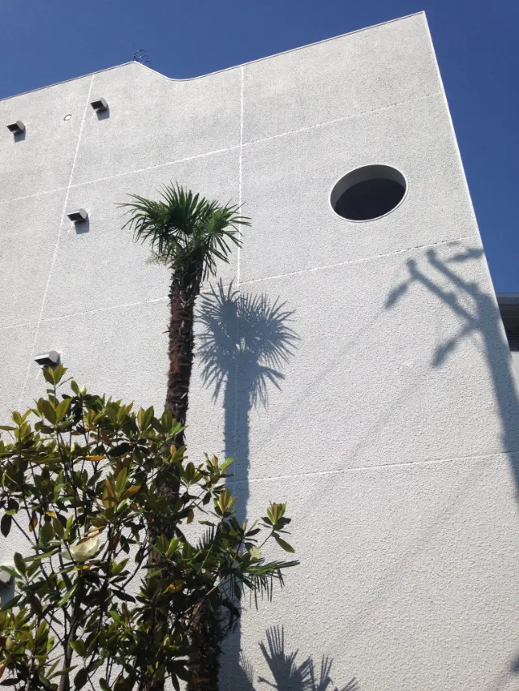
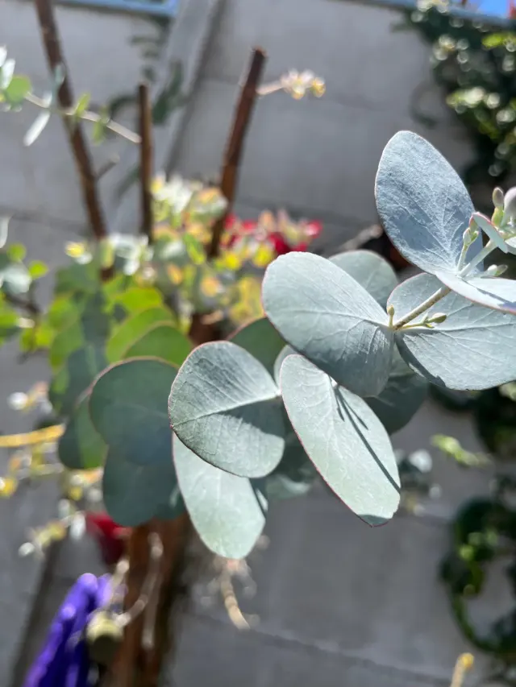
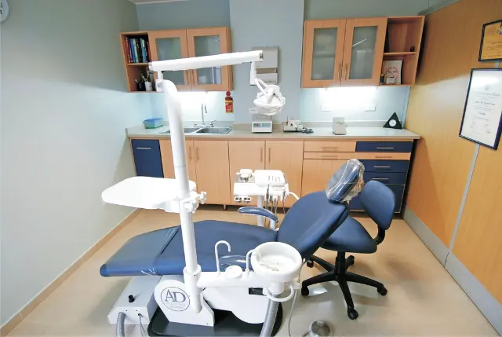
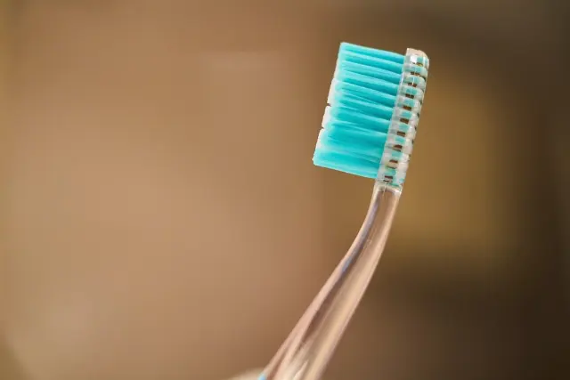
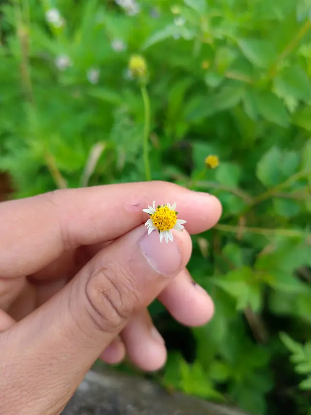

<!doctype html><meta charset='utf-8'><title>Hoja de contactos</title><style>body{font:14px system-ui;margin:24px;background:#eee}section{margin-bottom:28px}div{display:grid;grid-template-columns:repeat(3,1fr);gap:12px}figure{margin:0;background:#fff;padding:8px}img{width:100%;height:260px;object-fit:cover;display:block}figcaption{padding-top:6px}</style><section><h2>luz — Primera pantalla: la calma antes de hablar de dientes</h2><div><figure><figcaption><b>luz</b> · openverse/wordpress · CC CC0 1.0</figcaption></figure><figure><figcaption><b>luz-b</b> · openverse/stocksnap · CC CC0 1.0</figcaption></figure><figure><figcaption><b>luz-c</b> · openverse/stocksnap · CC CC0 1.0</figcaption></figure></div></section><section><h2>hojas — Capítulo «Sin prisa»: textura viva en salvia</h2><div><figure><figcaption><b>hojas</b> · openverse/wordpress · CC CC0 1.0</figcaption></figure><figure><figcaption><b>hojas-b</b> · openverse/wikimedia · CC CC0 1.0</figcaption></figure><figure><figcaption><b>hojas-c</b> · openverse/rawpixel · CC CC0 1.0</figcaption></figure></div></section><section><h2>sillon — Tratamientos: el espacio clínico, limpio y luminoso</h2><div><figure><figcaption><b>sillon</b> · openverse/rawpixel · CC CC0 1.0</figcaption></figure><figure><figcaption><b>sillon-b</b> · openverse/rawpixel · CC CC0 1.0</figcaption></figure><figure><figcaption><b>sillon-c</b> · openverse/rawpixel · CC CC0 1.0</figcaption></figure></div></section><section><h2>instrumentos — Precisión: detalle de instrumental</h2><div><figure><figcaption><b>instrumentos</b> · openverse/rawpixel · CC CC0 1.0</figcaption></figure><figure><figcaption><b>instrumentos-b</b> · openverse/rawpixel · CC CC0 1.0</figcaption></figure><figure><figcaption><b>instrumentos-c</b> · openverse/rawpixel · CC CC0 1.0</figcaption></figure></div></section><section><h2>manos — Cuidado humano sin mostrar pacientes</h2><div><figure><figcaption><b>manos</b> · openverse/wordpress · CC CC0 1.0</figcaption></figure><figure><figcaption><b>manos-b</b> · openverse/wordpress · CC CC0 1.0</figcaption></figure><figure><figcaption><b>manos-c</b> · openverse/wordpress · CC CC0 1.0</figcaption></figure></div></section><section><h2>agua — Un minuto para respirar: superficie quieta</h2><div><figure><figcaption><b>agua</b> · openverse/stocksnap · CC CC0 1.0</figcaption></figure><figure><figcaption><b>agua-b</b> · openverse/stocksnap · CC CC0 1.0</figcaption></figure><figure><figcaption><b>agua-c</b> · openverse/stocksnap · CC CC0 1.0</figcaption></figure></div></section><section><h2>nino — Odontopediatría: infancia y cepillado, sin rostros</h2><div><figure><figcaption><b>nino</b> · openverse/rawpixel · CC CC0 1.0</figcaption></figure><figure><figcaption><b>nino-b</b> · openverse/rawpixel · CC CC0 1.0</figcaption></figure><figure><figcaption><b>nino-c</b> · openverse/rawpixel · CC CC0 1.0</figcaption></figure></div></section>